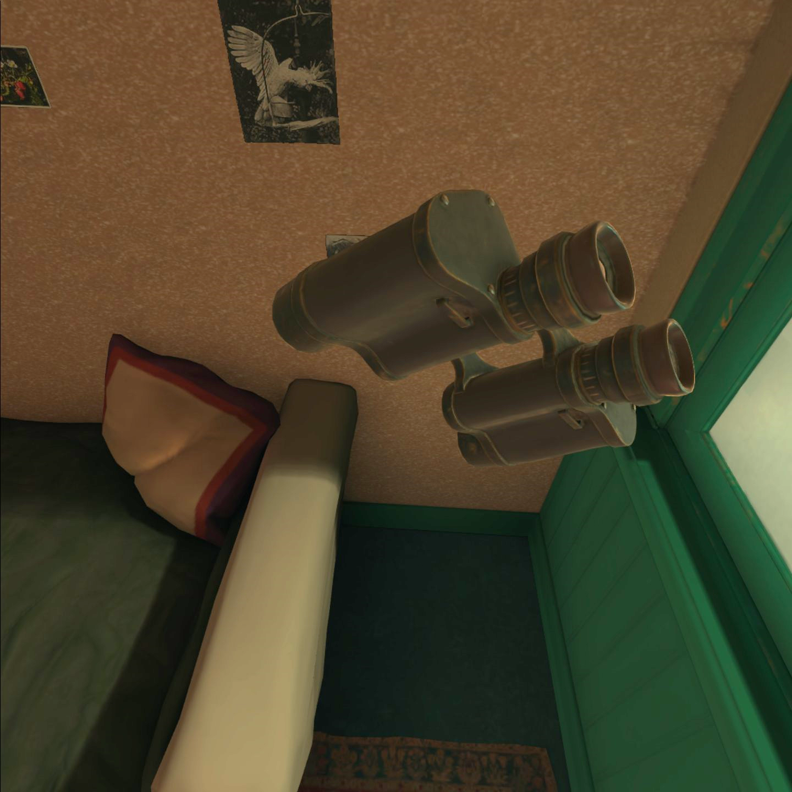
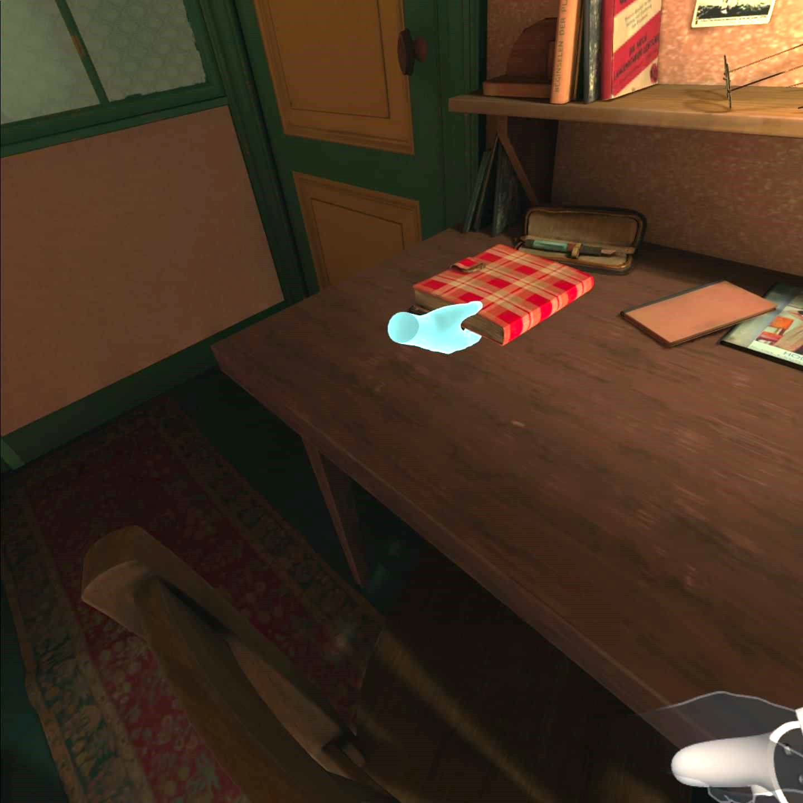
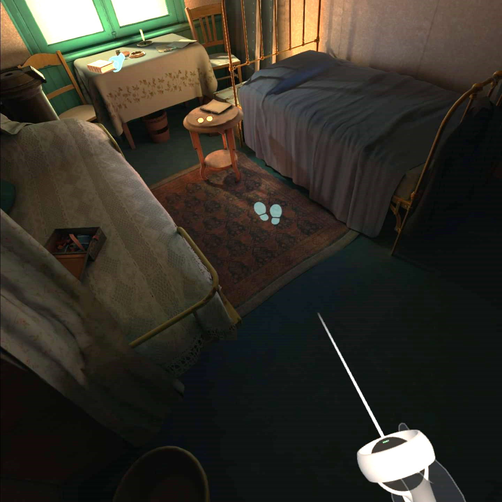
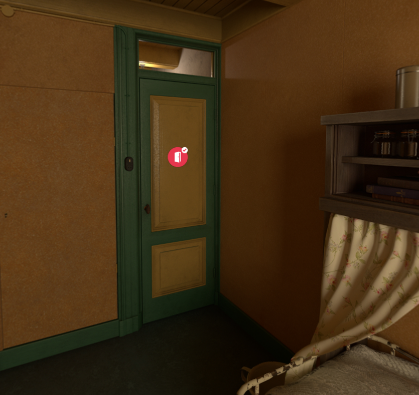
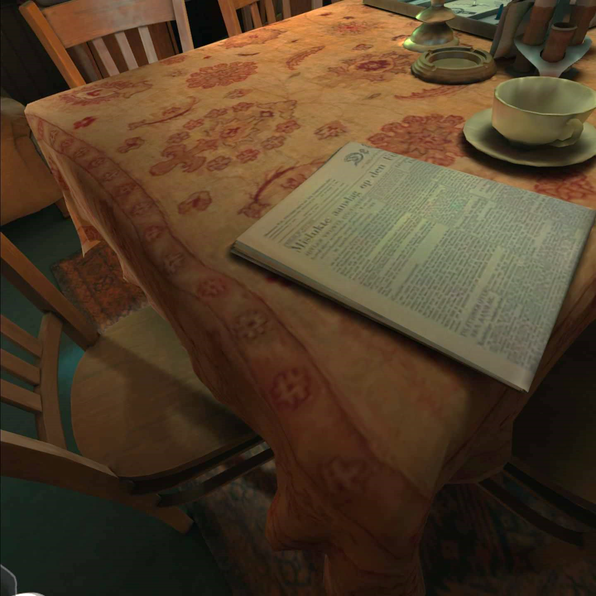
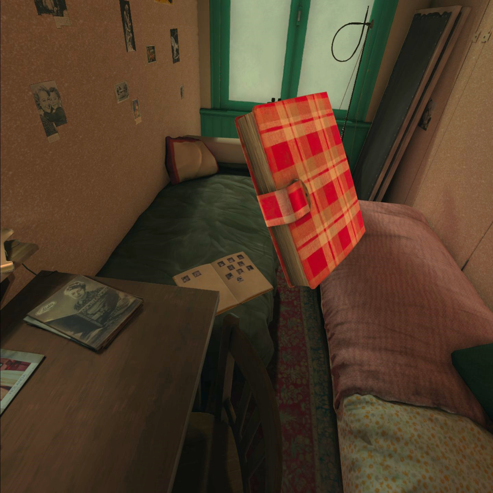
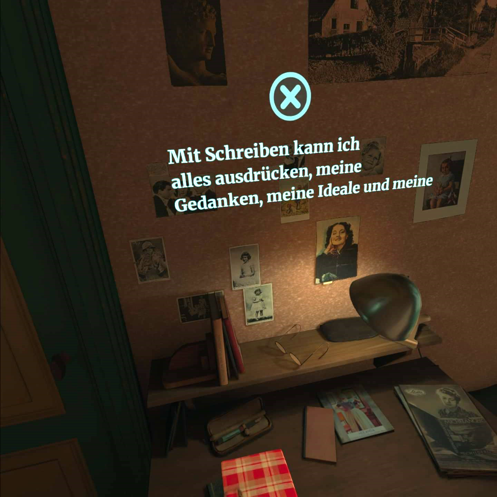
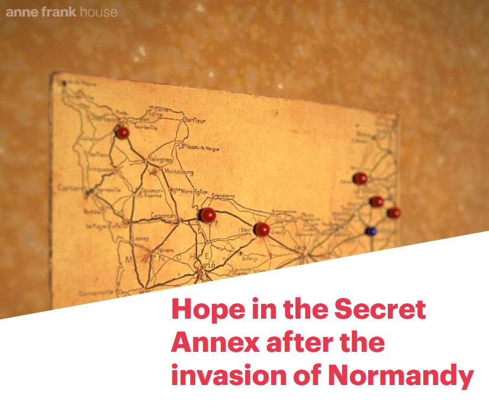
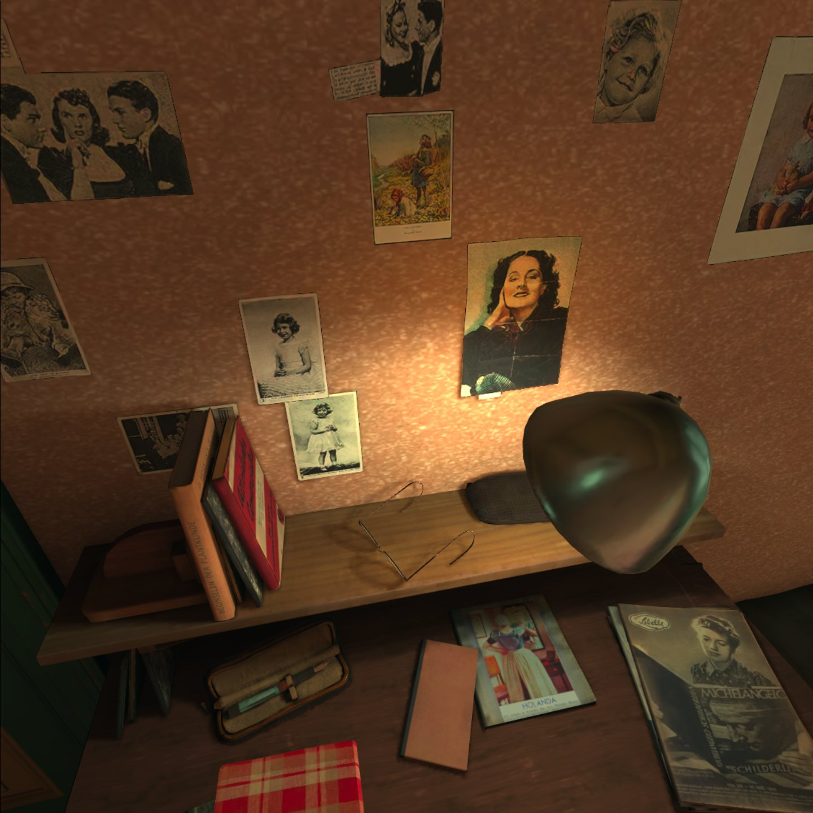

Anne Frank House VR & The Secret Annex (3D)
Table of Contents
Abstract
After his return from deportation, Otto Frank, father of Anne Frank, decreed that the annex in which the family hid during WWII should no longer be furnished. For this reason, Anne Frank’s world-famous writing place is vacant today. With the project The Secret Annex (3D), which was launched in 2010, and the VR application The Anne Frank House VR, which has existed since 2018, the Anne Frank Foundation is finally venturing to restore the annex virtually to its former state. In this way, the Anne Frank House wants to create an immersive environment that gives users an impression of the living conditions in the annex at the time of WWII. Although it is obvious from the outset that the resource under review is not a digital edition in the classical sense, it is nevertheless reviewed on the assumption that it is one according to the RIDE-‘Criteria for Reviewing Digital Editions and Resources’. It aims to emphasise the added value ‘Virtual Reality’ (VR) could have for digital edition practice.
Einführung
Das Anne Frank Haus (AFH) in Amsterdam beherbergt die Stätte, in welcher sich die Familie Frank und noch vier weitere Personen zwischen 1942 und 1944 vor dem aufrückenden Nazi-Regime versteckt hielten. In diesem Zeitraum verfasste Anne Frank ihr weltweit berühmt gewordenes Tagebuch, wodurch sie zu einer Symbolfigur für die Schrecken und Qualen des jüdischen Volks während der Shoah avancierte. Seit seiner Gründung im Jahr 1957 hat sich das AFH das Ziel gesetzt, das ehemalige Versteck der Familie Frank zu erhalten und ausgehend von Annes Leben „Ausstellungen, pädagogische Programme und Produkte“1, die sich mit der Gefahr von „Antisemitismus, Rassismus und Diskriminierung“2 auseinandersetzen, zu entwickeln.
In diesem Rahmen nimmt die Stiftung eine Vorreiterstellung in der digitalen Kulturvermittlung ein. Durch die Schaffung des Onlineportals The Anne Frank House online (Anne Frank Stichting 2018a) können sich Menschen weltweit mit dem Schicksal der Anne Frank vom heimischen Computer aus befassen. Um diese Auseinandersetzung für jüngere Menschen möglichst interessant zu gestalten, schöpft das AFH allerneuste digitale Medienangebote aus. Dazu zählen neben einer Webseite auch Apps, YouTube-Videos, Google Arts & Culture-Sheets, Blogs, Soziale Medien, 360°-Videos und Virtual-Reality-Anwendungen (VR-App).
Vorwiegend soll das Augenmerk in dieser Rezension auf zwei Angebote des AFH, die über die Einstiegsseite des Onlineportals erreichbar sind, gerichtet werden: die VR-App Anne Frank House VR (AFHVR, Anne Frank Stichting 2018b) und die Browseranwendung The Secret Annex (TSA, Anne Frank Stichting 2018c). Die Angebote sind nicht stationär gebunden und können von überall abgerufen werden. Beide Projekte stehen im engen Zusammenhang und bieten eine digitale Rekonstruktion des Hinterhauses im Zustand, wie es zwischen 1942 und 1944 aussah; also in jenem Zeitraum, in welchem sich die Familie Frank dort versteckt hielt. Darüber hinaus soll in diesem Beitrag evaluiert werden, ob diese beiden Simulationen die Kriterien für eine digitale Edition erfüllen könnten. Eine digitale Edition ist bei ihrer Korpusbildung bekanntlich nicht darauf beschränkt, allein Textträger in Form von beschriebenen Blättern, sondern auch Dokumente von weitaus komplexerer Materialität erschließend wiederzugeben, wie etwa Inschriften auf Wänden, Skulpturen oder Tontafeln.3 Daneben gibt es außerdem seit Längerem Diskussionen darüber, wie 3D-Simulationen nutzbringend in einen editionswissenschaftlichen Kontext eingebettet werden können. Federführend in diesem Diskurs sind Costas Papadopoulos und Susan Schreibman vom Projekt Pure3D in Maastricht zu nennen (Pure3D 2023). In ihrem bereits 2019 erschienenen Aufsatz Towards 3D Scholarly Editions beschreiben Papadopoulos und Schreibman die Möglichkeit, mithilfe von 3D-Simulationen komplexe räumliche und zeitliche Ereignisse, wie im konkreten Beispiel eine Schlacht, editorisch aufzubereiten (Papadopoulos und Schreibman 2019). Aus diesem Grund erfüllen die beiden Angebote des AFH grundsätzlich die Voraussetzung, um als eine digitale Edition betrachtet werden zu können. Ähnlich zu den Projekten von Pure3D wird bei den Projekten des AFH versucht, ein komplexes räumlich-zeitliches Moment zu erschließen. Diese Erschließung erfolgt ebenfalls, wie von Papadopoulos und Schreibman (2019) nebst weiteren Kriterien für die 3D Scholarly Edition gefordert, durch den Einsatz von Kommentaren, die sich verstreut über das Szenario ausfindig machen lassen. Dennoch soll an dieser Stelle betont werden, dass die beiden immersiven Angebote des AFH in ihrem Selbstverständnis keine kritische Edition darstellen. Wie sich noch zeigen wird, will die Stiftung mit diesem Angebot eine digital-immersive Lernplattform für junge Menschen schaffen. Im Folgenden wird das Projekt des AFH dennoch unter den bekannten RIDE-Kriterien für eine kritische digitale Edition bewertet, um zu sehen, wie beide Welten – diejenige der digitalen Museumsdidaktik und diejenige der digitalen Editionswissenschaft – zukünftig Synergien schaffen könnten. Deswegen wird der Begriff ,Edition‘ nur in einfachen Anführungszeichen gesetzt erscheinen, wenn er in Bezug auf die beiden Projekte genannt wird.
Das Projekt AFHVR wurde vom AFH in Zusammenarbeit mit Vertigo Games (Force Field Entertainment) und Oculus realisiert. Finanziert wurde das Projekt von der Anne Frank Stiftung mit Unterstützung von Oculus.4 Die Applikation wurde 2018 veröffentlicht und steht seit 2019 in einer aktualisierten Form im App-Store von Oculus zum Download zur Verfügung.5 Im Impressum werden Martin de Ronde und Hans Tasma als Verantwortliche für die technische Infrastruktur genannt, sowie Ellen van der Kraan, Charlotte Besmann und Tom Brink für die kuratorische Aufbereitung der App.
TSA ist vermutlich schon seit 2010 über das Onlineportal abrufbar und fußt auf einem gleichnamigen Vorgängerprojekt, welches auf der Grundlage von 360°-Videos aufbaute. Leider ist die Informationslage über die Entwicklung und die Publikationsgeschichte recht dürftig. Ansprechpartner*innen und Entwickler*innen zu diesem Projekt werden nicht genannt.
Generell gestaltet sich der Zugriff auf Projektmetadaten schwierig. Alle Metadaten, die ermittelt werden konnten, finden sich verstreut in einzelnen Pressemitteilungen, Blogeinträgen und in YouTube-Videos, die für diese Rezension ausgewertet wurden. Für das AFH im Allgemeinen steht ein Impressum zur Verfügung. Zudem bietet die Stiftung diverse Wege zur Kontaktaufnahme an, z. B. über ein FAQ, ein Kontaktformular, telefonisch, via E-Mail oder über die diversen Sozialen Medien.6
Gegenstand und Inhalt
Das AFH kristallisiert in verschiedenen Quellen drei Gründe für die Entwicklung und Bereitstellung von AFHVR und TSA heraus. Ein erstes Anliegen ist die virtuelle Rekonstruktion der Möbel im Hinterhaus. Nach dem Krieg entschied Otto Frank, der Vater von Anne, das Haus nicht wieder zu möblieren, nachdem es von den Nazis leergeräumt worden war. Darum ist das originale Gemäuer nicht mehr in dem Zustand, in dem Anne es 1944 verlassen musste.7 Als einen weiteren Anlass benennt das AFH den weltweiten Zugang zum Hinterhaus. Es möchte Menschen aus der ganzen Welt die Gelegenheit bieten, das Versteck der Anne Frank selbstständig erkunden zu können.8 Als letzten Impuls nennt das AFH die Barrierefreiheit. Infolge der Architektur ist das Hinterhaus leider nur fußläufig zu besichtigen. Das AFH möchte aber auch diejenigen erreichen, die aufgrund einer eingeschränkten Mobilität die originalen Räumlichkeiten nicht besuchen können.9
Die beiden Projekte erweisen sich für die digitale Kulturvermittlung insofern als relevant, als sie einen vertiefenden informativen Einblick in die Lebensumstände und die Schreibstätte der Anne Frank gestatten. So kann der Entstehungskontext des berühmten Tagebuchs hautnah und immersiv10 erfahren werden; so, als wäre man selbst ein Teil der untergetauchten Gruppe. Gerade bei einem so belastenden Thema wie dem der Shoah erscheint es als präventive Maßnahme zur Vermeidung solcher Ereignisse wichtig, Gefühle und Regungen mittlerweile verstorbener Akteur*innen wieder aufleben zu lassen und ins kulturelle Gedächtnis zurückzurufen. Daher zeigen sich die Ressourcen in einem entsprechend gewollt düsteren Gewand, innerhalb welchem durch Beleuchtung, Geräusche und räumliche Enge ein mulmiger Charakter verstärkt wird.
Die 3D-Szenarien sprengen damit jegliche navigatorischen Paradigmen von (digitalen) Editionen, die sich meistens auf die Buchmetapher berufen. Hier wird nicht mit einem 2D-Desktop und dem klassischen Maus-Tastatur-Interface agiert. Stattdessen wird durch das Tragen einer Datenbrille ein 360° umfassender Illusionsraum erzeugt, durch welchen mithilfe von zwei Kontrollern navigiert wird. Auf diese Weise wird die durch Leon Battista Alberti formulierte Fenstermetapher, die auch auf digitale Desktop-Editionen zutrifft, aufgelöst.11 Nutzende der App werden so buchstäblich in das Innere des Hinterhauses hineinversetzt und erhalten das Gefühl, von den Räumlichkeiten tatsächlich umgeben zu sein.
Zuvor konnte das möblierte Hinterhaus im Zustand von Annes Aufenthalt nur über einige Fotografien erschlossen werden. Ferner ließ Otto Frank 1961 ein Modell aus Holz und Stoff mit der ursprünglichen Möblierung des Hauses anfertigen, um Museumsbesucher*innen einen Eindruck des damaligen Zustandes zu vermitteln.12 Insgesamt bietet die ,Edition‘ eine Fülle an Informationen rund um das Leben im Hinterhaus. Dazu zählen neben den erwähnten 360°-Aufnahmen bzw. Rekonstruktionen auch eine Kommentierung, die Zitation von Tagebuchauszügen, das Einbinden von Videos, sowie – nur in der VR-App enthalten – eine geführte Tour. Die App ist darüber hinaus in sieben Sprachen abrufbar. In TSA wird außerdem ein Querschnitt des Hinterhauses eingeblendet, der zur Navigation durch das virtuelle Versteck bestimmt ist.
Die Kommentare können durch klickbare Symbole, die über den referierten Objekten erscheinen, abgerufen werden. Dabei gibt es einen wesentlichen Unterschied zwischen AFHVR und TSA. Während über die in TSA eingebetteten Icons Kontextkommentare, weiterführende Links und korrespondierende Videos eingesehen werden können, erscheinen durch das Klicken der Icons in der VR-Anwendung Zitate aus dem Tagebuch, die von einer Mädchenstimme vorgelesen werden.
 
Ziele und Methoden
Leider lassen sich Ziele und Absichten der beiden Projekte nur aus dem Kontext erschließen. Da es sich bei den Ressourcen um keine Edition handelt, liegt demnach auch kein editorischer Bericht im klassischen Sinn vor. Um an Informationen über die ,Edition‘ zu gelangen, müssen diverse externe Quellen konsultiert werden. Zu diesen Quellen zählen etwa Pressemitteilungen,14 Beschreibungen aus dem App-Store von Oculus 15 oder Videoreportagen auf YouTube (Der Spiegel 2012). Dieser Umstand hat womöglich auch damit zu tun, dass sich speziell dieses Angebot des AFH nicht an ein wissenschaftliches Publikum richtet. Vielmehr geht es darum, die schon erwähnten Kernpunkte – zeitliche Erschließung, weltweiter Zugang und Barrierefreiheit – stark zu machen und darüber hinaus ein junges Publikum anzusprechen. Das soll jedoch nicht bedeuten, dass ein wissenschaftlicher Mehrwert durch das Projekt völlig ausgeschlossen ist. Die Erschließung eines zeitlich begrenzten Zustands kann durchaus eine Relevanz für die Forschung haben.
Neben dem Fehlen eines ,editorischen‘ Berichts ist zudem auffällig, dass für die Projekte keine spezifische Terminologie entwickelt wurde. Von Seiten des AFH wird kein Begriffsangebot gemacht, um die Entitäten in eine gängige Klassifizierung, wie ,Edition‘ oder ,Simulation‘, einzuordnen. Selbst die Eigenbezeichnung der Projekte ist nicht konsistent. So wird die App auf der Webseite des AFH als The Secret Annex in Virtual Reality beworben. Tatsächlich heißt die VR-Anwendung aber Anne Frank House VR.16 Eine spezielle Terminologie wird somit vermieden. In einer Pressemitteilung des Onlineportals wird zur Beschreibung der VR-Anwendung der Begriff virtual reality tour verwendet.17 Innerhalb des Portals findet diese Bezeichnung allerdings keine Verwendung.
Aufgrund des Fehlens dieser Angaben lässt sich nicht reflektieren, welches Bestreben die Anwendung verfolgt. Generell konstatiert die DFG in Bezug auf die Erfassung von dreidimensionalen Objekten, dass „sich [bislang] keine Standards im Bereich der softwareunabhängigen Datenformate und der Dokumentation der Digitalisierung/Modellierung und der Resultate durchgesetzt [haben]“ (DFG 2016, 27). Daher konnte das AFH auch auf keine Standards oder auf eine ,best practice‘ zurückgreifen.
Umsetzung und Präsentation


Die Bildqualität in beiden Teilen der Anwendungen überzeugt durch ihre gestochene Schärfe. Teilweise ist die Wirkung der digitalen Bilder so ausgereift, dass nicht mit Sicherheit gesagt werden kann, ob es sich um eine ,echte‘ Fotografie oder um eine digitale Animation handelt. Die Grafik kann demzufolge mit modernsten Computersimulationen mithalten. Die Rekonstruktion überzeugt durch eine detailreiche Ausschmückung der einzelnen Räume, wodurch ein besonderer Grad der Immersion erreicht wird.



 
Ferner werden keinerlei Angaben dazu gemacht, welche Objekte der Simulation tatsächlich rekonstruiert21 und welche nur als ,Lückenfüller‘ für nicht überlieferte Stellen im Raum hinzugefügt wurden. In diesem Rahmen wäre es auch interessant gewesen, die originalen Maßangaben der Objekte zu erfahren. Ein solches Desiderat hätte mithilfe eines editorischen Berichts oder der Verlinkung zum bereits vorhandenen Archiv hinzugefügt werden können. Ansonsten ist TSA gut mit den anderen Inhalten des Portals vernetzt. Es kann nicht nur aus dem Projekt heraus auf andere Inhalte des AFH zugegriffen, auch vice versa kann von verschiedenen Artikeln sowie aus digitalen Lerneinheiten auf einzelne Räume der Simulation verwiesen werden.22
Die Zitation von einzelnen Räumen und Objekten gestaltet sich erstaunlich einfach. Zwar gibt es in Bezug auf die Zitation von Simulationen noch keine wirklichen bibliografischen Standards, aber trotzdem verfügt jeder Kommentar und jeder Raum über einen separaten und eindeutigen Link, der geteilt werden kann. Auf diese Weise können gezielte Informationen aus den beiden Simulationen in andere Projekte, wie etwa in digitale Lerneinheiten, einbezogen werden. Dem gegenüber ist die Zitation aus der VR-Anwendung deutlich schwieriger. Hier können bislang nur Screenshots oder Screencasts aufgenommen, jedoch keine Links erzeugt werden.23
Lobenswert ist hervorzuheben, dass die VR-App von Oculus lizenziert ist und somit im offiziellen Store geführt werden darf. Auf diese Weise kann die App einfach auf die Datenbrille heruntergeladen werden. Damit hebt sich die App von vielen anderen Apps aus dem Kulturbereich ab,24 die nicht lizenziert sind. Diese müssen aufwendig über alternative Stores wie SideQuest auf das Endgerät geladen werden. Da dieser Vorgang aber wesentlich komplizierter ist und ein technisches Know-how voraussetzt, bietet AFHVR durch diesen Umstand einen leichten Zugang für alle, unabhängig von der jeweiligen technischen Affinität. Durch den Download ist es außerdem möglich, die App offline nutzen zu können. Dies ist ebenfalls ein positiv zu bewertender Punkt.
Das AFH pflegt weltweit Kontakte zu Wissenschaft und Forschung und versteht sich selbst als eine zentrale Anlaufstelle für die Aufarbeitung und Erforschung der Shoah bzw. des Lebens der Anne Frank. In diesem Rahmen richtet die Stiftung weltweit Ausstellungen aus und veranstaltet diverse Bildungsprogramme.25 Daneben betreibt das AFH auch das Anne Frank Youth Network, womit die Organisation junge Menschen weltweit motivieren will, sich gegen Rassismus, Antisemitismus und Vorurteile zu engagieren.26 Aufgrund dessen agiert das AFH intensiv auf den Sozialen Medien. Neben Facebook und Twitter ist die Stiftung auch auf Instagram und YouTube aktiv. In allen Netzwerken werden mit einer hohen Frequenz Inhalte rund um das AFH geteilt. Dennoch dienen die Sozialen Medien primär dazu, die Stiftung zu bewerben. Sie können daher nur indirekt als Austauschplattform für die ,Edition‘ genutzt werden.
Leider ist das Projekt nicht als GitHub-Repository o. Ä. verfügbar. Solchermaßen hätte das AFH zur Modellbildung für die technische Realisierung und Archivierung von VR-Simulationen im wissenschaftlichen Kontext beitragen können. Andere Institutionen, die ähnliche Projekte planen, hätten so von den zu Verfügung gestellten Daten profitieren können. Demnach sind die Grunddaten für eine ,Edition‘ auch nicht online abrufbar. In welchem Datenformat die Daten der Ressource vorliegen, konnte nicht ermittelt werden.
Dieser Umstand führt darüber hinaus zu einem Problem für die nachhaltige Nutzbarkeit. Das Projekt gilt zwar offiziell seit dem überarbeiteten Launch im Jahr 2018 als abgeschlossen, allerdings bleibt eine dauerhafte Abrufbarkeit der möglichen ,Edition‘ aufgrund der mangelnden Einsicht in die Grunddaten fraglich. Die Webseite und damit TSA sind an das AFH gekoppelt und fallen in seine Verantwortlichkeit. Die App und die dazugehörige Datenstruktur sind wiederum an den Entwickler Force Field gebunden. Sollte dieser irgendwann nicht mehr existieren, kann nur gehofft werden, dass das AFH die entsprechenden Maßnahmen treffen wird, um die Daten selbst zu hosten.
Bezüglich des Copyrights werden keine Angaben gemacht. Laut dem Oculus-Store ist Force Field für den Inhalt der VR-App verantwortlich. Ein Lizenzmodell wie das der Creative Commons wird nicht verwendet. Dennoch scheint das AFH eine Nachnutzung zu unterstützen. Daher steht die App einerseits kostenlos zum Download zur Verfügung, andererseits hat das AFH seine gesamten digitalen Materialien aus dem Onlineportal für Lernplattformen wie LessonUp zur Verfügung gestellt.27
Fazit
Bevor darüber entschieden werden kann, ob es sich bei dem rezensierten Projekt um eine Edition handelt oder nicht, sollten vorab ein paar wesentliche Punkte hervorgehoben werden: Zum einen verwendet das AFH selbst den Begriff ,Edition‘ nicht. Generell hält sich die Stiftung bei der grundlegenden Terminologie über AFHVR und TSA recht verschlossen. Zum anderen geht an verschiedenen Stellen hervor, dass das Projekt nicht zwangsläufig für Forschungszwecke bestimmt ist, sondern viel mehr darauf ausgelegt ist, das Interesse von Schüler*innen und Jugendlichen im Allgemeinen für das Leben der Anne Frank zu erwecken. Dennoch wird für das folgende Fazit die Prämisse angenommen, es handele sich um eine digitale Edition. Dies geschieht, um aufzuzeigen, welcher Mehrwert sich zukünftig sowohl für den musealen Sektor als auch für die digitale Editionswissenschaft durch ihre Fusion im digitalen dreidimensionalen Raum entstehen kann:
Aus den genannten Gründen, die das Selbstverständnis des Projekts und die angesprochene Rezipient*innengruppe betreffen, konnte in dieser Rezension aufgezeigt werden, dass viele ,editorische Basics‘ gar nicht oder nur teilweise vorhanden sind. Insbesondere fehlt das ,Herzstück‘ einer (digitalen) Edition: der editorische Bericht. Aufgrund dieses Mangels werden weitere grundlegende Parameter einer Edition nicht erfüllt. Dieser Umstand wird speziell durch die nicht vorhandene Dokumentation der Rekonstruktion exemplifiziert. Hier ist ein deutliches Defizit in der Transparenz feststellbar, da nicht eindeutig hervorgeht, wo ein Gegenstand rekonstruiert und wo er allein als ,Lückenfüller‘ eingesetzt wurde. Vereinfacht ausgedrückt können wir nicht mit Sicherheit sagen, was in dem Projekt auf historischen Fakten beruht und was der Fantasie der Entwickler*innen entsprungen ist. Daher ist das Projekts für wissenschaftliche Zwecke nicht zu verwenden. Dennoch, um diesen Sachverhalt erneut ins Zentrum zu rücken, muss es dieser Absicht auch gar nicht beikommen, da es sich in seinem Selbstverständnis als didaktisches Hilfsmittel versteht.
Maßgeblich standen dieser Rezension nur wenige Metadaten über das Projekt zur Verfügung. Alle Informationen mussten dezentral aus verschiedenen Webseiten und aus Videobeiträgen zusammengetragen werden. Zudem werden viele wichtige Informationen auch nur implizit genannt und müssen aus dem größeren Kontext erschlossen werden. Ein Großteil der Fragen aus dem Katalog zur Evaluierung von digitalen Editionen (Sahle 2014) konnte schlicht gar nicht beantwortet werden. Das führt folgerichtig zu einem weiteren Problem, welches das wissenschaftliche Qualitätsniveau betrifft. Aus den genannten Gründen werden, wie schon erwartet, die Kriterien für eine digitale Edition nicht erfüllt. Dabei würde ein solches Unterfangen nicht an der grundsätzlichen Unmöglichkeit scheitern, eine VR-Anwendung in ihrem Wesen als Edition zu verstehen, sondern aufgrund der Nicht-Erfüllung der editorischen Mindestanforderungen in diesem konkreten Fall.
Prinzipiell verfügt eine VR-Anwendung nichtsdestoweniger über die Voraussetzungen, die Paradigmen einer digitalen Edition erfüllen zu können. Denn am Beispiel der digitalen Rekonstruktion des AFH wird deutlich, dass die wesentlichen Parameter für eine digitale Edition vorhanden sind: Letztlich findet hier in Grundzügen vergleichbar mit den Ansätzen von Papadopoulos und Schreibman „eine erschließende Wiedergabe“ (Sahle 2014)28 eines komplexen räumlichen und zeitlichen Ereignisses statt. Wobei der Editionsgegenstand dieses Projekts nicht ein Dokument in Form eines beschriebenen Blattes Papier darstellt, sondern ein Ort ist, der in einem gewissen historischen Moment existierte und durch eine ,Edition‘ erschlossen werden könnte. Infolgedessen wäre es für das AFH durch Nacharbeitung möglich, zu einer 3D-Edition im Sinne von Papadopoulos und Schreibman zu werden – wenn sie es denn wollten.
Auch wenn das Projekt wie erwartet die Kriterien für eine digitale Edition nicht hinreichend erfüllt, so erreicht es aber trotzdem seine selbstgesteckten Ziele weitestgehend. Das Projekt verfolgt dabei, wie bereits erwähnt, drei verschiedene Absichten. Als erstes und vordergründig steht die zeitliche Konservierung und (Re)Möblierung des Hinterhauses im Fokus. Dieses Vorhaben ist definitiv gelungen. Auf Grundlage von Bildern und dem Holzmodell ist es digital möglich, das gesamte Hinterhaus in seinem möblierten Erscheinungsbild zwischen 1942 und 1944 zu begehen. Durch den Einsatz der VR-App ist diese Besichtigung als immersives und einprägsames Erlebnis zugänglich. Die zweite Absicht zielt auf einen weltweiten Zugang zum AFH ab und kann ebenfalls als erfüllt betrachtet werden. Neben der kostenlosen App steht die Seite als HTML-Page zur Verfügung und kann grundsätzlich von jedem Browser weltweit abgerufen werden. Der letztgenannte und ein Stück weit auch innovativste Anlass für das Projekt wird durch den barrierefreien Zugang zur historischen Stätte formuliert. Da das originale Gemäuer nur über sehr enge Gänge und schmale Treppen begangen werden kann, ist das echte Hinterhaus leider nicht barrierefrei. Umbaumaßnahmen würden aber vermutlich das Aussehen des denkmalgeschützten Hauses erheblich verändern, wenn diese denn überhaupt möglich sind. Daher ist die Idee, das Hinterhaus über VR für Menschen mit körperlichen Einschränkungen akzessibel zu machen, ein hochgradig interessanter Ansatz, der auch für andere Kulturstätten modellbildenden Charakter haben könnte. Nichtsdestoweniger könnte die Webseite per se noch barrierefreier gestaltet werden. So sollten für Personen mit einer Sehschwäche Alternativtexte zur Bildbeschreibung im Quellcode ergänzt oder eine Navigation mit der Tastatur innerhalb von TSA ermöglicht werden. Insgesamt wird die Simulation ihren Zielen gerecht, wenn bedacht wird, an wen sie sich richtet und dass sie nicht für die Forschung bestimmt ist. Sie ist bestimmt in der Lage, das Interesse bei jungen Menschen für Anne Franks Leben im Hinterhaus zu erwecken.
Daneben können zukünftige digitale Editionen aus diesem Projekt etwas mitnehmen. Aufgrund der kompletten Auflösung des Buchparadigmas innerhalb der VR-App bietet das Projekt einen völlig neuartigen Ansatz. Denn VR bietet die Chance, zukünftig auch Gegenstände zu edieren, die bislang aufgrund der Verhaftung der meisten Editionen an der Zweidimensionalität noch gar nicht in Betracht gezogen wurden (Sahle 2013, 270–271). In der Folge könnte mithilfe von VR und Augmented Reality (AR) etwa ein Gebäude wie das AFH ,edierbar‘ gemacht werden. Dies gelingt speziell durch die bereits erwähnte Auflösung der Fenstermetapher, die nicht nur für das analoge Buch, sondern auch für die digitale Desktop-Edition gilt. Denn auch 3D-Simulationen am PC werden durch ,Rahmen‘ begrenzt, sei es das Browserfenster oder der Bildschirm selbst. Durch diese Auflösung sehen Nutzende der App nicht nur auf ein begrenztes Szenario, sondern werden direkt von ihm umgeben. Und genau hierin besteht die Stärke von VR für die Editionswissenschaft. Durch dieses neue Mittel zur Reproduktion von Räumlichkeit vermag das Digitale zukünftig auch Gegenstände zu edieren, an denen eine Buchausgabe basal gescheitert wäre. Denn geradewegs Räumlichkeit und die dritte Dimension bringen das zweidimensionale Buch an seine Grenzen.
Durch die Simulation des AFH ergibt sich für den wissenschaftlichen Gebrauch insofern ein Mehrwert, als dass ziemlich eindringlich nachvollzogen werden kann, wie und unter welchen Bedingungen das Tagebuch der Anne Frank entstanden ist. Durch das immersive Erlebnis mit der Datenbrille entsteht das Gefühl, als würde der Schriftstellerin bei der Produktion des Tagebuchs über die Schultern geblickt werden. Einzelne Passagen des Buches können mit ,realen‘ Gegenständen, die sich im Hinterhaus befanden, verortet und kontextualisiert, gewisse beschriebene Ereignisse nachvollzogen oder gar nacherlebt werden. Das durch das Tagebuch beschriebene Hinterhaus kann vom heimischen PC aus besucht und erforscht werden, was der Wissenschaft einen riesigen Vorteil bietet. Dennoch müssten die weiter oben angeführten Kritikpunkte, die die qualitative Sicherung betreffen, nachgearbeitet werden, wenn die Simulation für wissenschaftliche Zwecke fruchtbar gemacht werden sollte. Ausgehend von dieser letztgenannten Prämisse sollen im Folgenden einige Verbesserungsvorschläge angeführt werden, die darauf abzielen, die Simulation für Forschungszwecke attraktiver zu gestalten.
Das bei Weitem größte Defizit würde sich im Fehlen eines editorischen Berichts offenbaren. Dieser müsste nachgereicht werden und sowohl einige Grundangaben nachtragen als auch die Rekonstruktionsprinzipien offenlegen. Darunter müssten auf Metaebene Informationen zu Ansprechpartner*innen in Form eines Projektorganigramms und Informationen zu den verschiedenen Launchs und Versionen angegeben werden. Analog zu ,klassischen‘ Editionen müsste das AFH angeben, welches Ziel dieses Projekt verfolgt, auf welcher Grundlage die Objekte rekonstruiert worden sind, welche Verfahren angewandt wurden und wo eventuelle Wissenslücken bestehen.
Die Tatsache, dass die App durch den Spieleentwickler Force Field umgesetzt wurde, kam zwar der grafischen Umsetzung sehr entgegen, führt aber auch dazu, dass hier ein Unternehmen mit wirtschaftlichem Interesse involviert ist. Dies führt wiederum dazu, dass die Quellcodes zur Nachnutzung nicht zur Verfügung stehen. TSA und AFHVR sind zwar kostenlos abrufbar, aber keine Open Source-Projekte. Andere kulturelle Einrichtungen können somit nicht von der technischen Infrastruktur des AFH profitieren. Eine Bereitstellung der Quelltexte auf der Webseite oder ein GitHub Repository könnten hier Abhilfe schaffen.
Wünschenswert wäre zudem eine Zusammenarbeit mit der kritischen digitalen Tagebuchedition zu den Manuskripten der Anne Frank, die ebenfalls vom AFH mitherausgegeben wird (Bruijn et al. 2021). Die eingeblendeten Zitate könnten mit der digitalen Edition verlinkt werden, sodass eine vertiefende Lektüre möglich ist. Sowohl in AFHVR und TSA kann jeweils nur der Einband des Tagebuchs betrachtet und bewegt, jedoch nicht geöffnet werden. Es könnte sich an dieser Stelle lohnen, die Faksimiles aus der digitalen Edition einzubeziehen, sodass das Tagebuch innerhalb der Simulation an Annes virtuellem Schreibtisch, also an der primären Produktionsstätte des Werks, gelesen werden kann. Auf diese Weise würde eine noch nie dagewesene Leseerfahrung entstehen, die sowohl Produktion als auch Rezeption miteinander verknüpft.
Gleichzeitig könnte die Tagebuchedition vice versa von der Simulation profitieren. Derartig findet nämlich schon im Abschnitt Locaties eine Verortung zwischen den Tagebucheinträgen und den Räumlichkeiten des Hinterhauses statt.29 Diese Ortsbestimmung wird mithilfe eines Querschnitts visualisiert. Beim Anklicken eines Raums filtert die Edition alle Zitate, die mit diesem Raum in Verbindung stehen, heraus. Zukünftig könnte die Tagebuchedition mit geringem Aufwand eine Verlinkung zur Simulation einfügen, um so direkt auf beschriebene Objekte oder Stellen im Raum zu verweisen.
Generell können die Dokumente, die in den Räumlichkeiten des Hinterhauses mit der VR-Brille betrachtet werden, nicht gelesen werden. Die Textträger sind zu unscharf, als dass sie entziffert werden könnten. Dennoch wäre es denkbar, die Faksimiles von Briefen, Zeitungen, Bildern und Kritzeleien an der Wand noch nachträglich in das Szenario einzufügen, damit die Dokumente in ihrer ursprünglichen kontextuellen Einbettung rezipiert werden können.
Zusätzlich wäre es hilfreich, wenn noch erhaltene Objekte und Dokumente, die in der Simulation auftauchen, neben der Annotation mit dem Archiv des AFH verlinkt werden würden. Im Zuge dessen hätten Interessent*innen eine Option, an weitere Metadaten wie Größe, Aufenthaltsort oder Zustand zu kommen.
Als kleine Anregung wäre noch einzubringen, dass die Suchfunktion der AFH-Webseite leider nicht auf die Simulation anwendbar ist. Es würde eine große Hilfestellung bieten, wenn zukünftig die Objekte aus der Simulation auch in der Suchfunktion erscheinen würden. Überdies ist die Maushandhabung zu fein reguliert, sodass ruckartige Bewegungen vermieden werden sollten.
Wie erwartet werden die Kriterien einen digitalen Edition nicht erfüllt. Dennoch sei abschließend hervorgehoben, dass diese beiden Angebote des AFH ihrem Zweck gerecht werden. Im Allgemeinen muss dem AFH ein großes Lob für sein Onlineportal ausgesprochen werden. Es gibt bislang nur wenige kulturelle Einrichtungen, die in dem Maß, wie es das AFH tut, aus den digitalen Vollen schöpfen. Für Jugendliche und auch Erwachsene leistet die Stiftung auf diese Weise weltweit einen wertvollen Beitrag zur digitalen Aufarbeitung der Shoah.
Bibliography
- Anne Frank Stichting, ed. 2018a. The Anne Frank House online. https://web.archive.org/web/20250410134737/https://www.annefrank.org/en/museum/web-and-digital/.
- Anne Frank Stichting, ed. 2018b. Anne Frank House VR. https://web.archive.org/web/20250315073649/https://www.annefrank.org/en/about-us/what-we-do/publications/anne-frank-house-virtual-reality/.
- Anne Frank Stichting, ed. 2018c. The Secret Annex. https://web.archive.org/web/20250410134801/https://www.annefrank.org/en/anne-frank/secret-annex/.
- Bruijn, Peter de, ed. 2021. Anne Frank Manuscripten. https://web.archive.org/save/https://www.annefrankmanuscripten.org/.
- DFG. 2016. DFG-Praxisregeln ˈDigitalisierungˈ. https://web.archive.org/save/https://www.dfg.de/download/pdf/foerderung/programme/lis/12_151_v1216_de.pdf.
- Friedberg, Anne. 2006. The Virtual Window: from Alberti to Microsoft. Cambridge: MIT Press.
- Grau, Oliver. 2000. Virtuelle Kunst in Geschichte und Gegenwart. Visuelle Strategien. Berlin: Dietrich Reimer Verlag.
- Papadopoulos, Costas, and Schreibman, Susan. 2019. “Towards 3D Scholarly Editions: The Battle of Mount Street Bridge.” International Journal of Digital Humanities 13 (1): http://www.digitalhumanities.org/dhq/vol/13/1/000415/000415.html.
- Pure 3D. 2023. An Infrastructure for the Publication and Preservation of 3D Scholarship. https://web.archive.org/web/20240503184758/https://pure3d.eu/.
- Radiance. 2023. The International Research Platform For Virtual Reality Experiences In Art. https://web.archive.org/save/https://www.radiancevr.co/.
- Sahle, Patrick. 2014. “Criteria for Reviewing Scholarly Digital Editions, version 1.1.” https://web.archive.org/web/20240124160901/https://www.i-d-e.de/publikationen/weitereschriften/criteria-version-1-1/.
- Sahle, Patrick. 2013. Digitale Editionsformen, 1: Das typografische Erbe. Schriften des Instituts für Dokumentologie und Editorik Bd. 8. Norderstedt: BoD.
- Der Spiegel. 2012. “ 3D-Erinnerung: Das virtuelle Anne Frank Haus.“ YouTube video, 4:32. Posted 2012. https://web.archive.org/save/https://www.youtube.com/watch?v=sY8b5ptxWsI.
Notes
- https://web.archive.org/web/20240124161526/https://www.annefrank.org/de/uber-uns/was-wir-tun/. ↑
- https://web.archive.org/web/20240124161526/https://www.annefrank.org/de/uber-uns/was-wir-tun/. ↑
- Zu nennen ist hier etwa das Projekt Deutsche Inschriften Online: https://www.inschriften.net/, oder etwa die Arbeiten von Pure3D, insb. The Battle of Mount Street Bridge: https://mountstreet1916.ie/. Die Liste ließe sich noch weiter fortsetzen. ↑
- https://web.archive.org/web/20240124155802/https://www.annefrank.org/en/about-us/news-and-press/news/2019/7/4/renewed-vr-tour-anne-franks-secret-annex/. ↑
- https://web.archive.org/web/20240124155802/https://www.annefrank.org/en/about-us/news-and-press/news/2019/7/4/renewed-vr-tour-anne-franks-secret-annex/. ↑
- https://web.archive.org/web/20240124162002/https://www.annefrank.org/en/about-us/contact/. ↑
- https://artsandculture.google.com/story/SAUBp8B2mXzPKw (15.02.2023). ↑
- https://web.archive.org/web/20240124162318/https://www.annefrank.org/de/uber-uns/nachrichten-und-presse/news-de/2019/7/4/erneuerter-vr-rundgang-durch-anne-franks-versteck/. ↑
- https://web.archive.org/web/20240124160055/https://www.annefrank.org/en/about-us/news-and-press/news/2018/6/12/anne-frank-house-vr-launched/. ↑
- Der Begriff ,immersiv‘ und das dazugehörige Nomen ,Immersion‘ bilden zusammen die Grundeigenschaft von VR. Unter dem Begriff ist das Eintauchen (lat. immersio) der Rezipierenden in das Zielmedium zu verstehen. Dabei werden durch den umgebenden 360°-Illusionsraum sämtliche Grenzen zwischen Rezipient*in und Medium aufgelöst und dieser Effekt mithilfe von vornehmlich audiovisuellen Mitteln verstärkt (Grau 2000, 25–26). ↑
- Alberti warf 1435 in seiner Abhandlung über Malerei und Perspektive De Pictura als erster die Idee auf, den Rahmen eines Bildes als ein geöffnetes Fenster anzusehen (Friedberg 2006, 1–2). ↑
- https://web.archive.org/save/https://artsandculture.google.com/story/SAUBp8B2mXzPKw und https://web.archive.org/save/https://www.annefrank.org/en/museum/anne-frank-collection/40/scale-model-part-1/. ↑
- Ob diese Aufnahmen aus der ersten Projektphase stammen, wofür das Museum extra geschlossen und möbliert wurde, oder im Rahmen des Studioaufbaus für die Produktion von Anne Franks Videotagebüchern, konnte nicht ermittelt werden. https://artsandculture.google.com/story/SAUBp8B2mXzPKw (15.02.2023) und https://www.youtube.com/watch?v=sY8b5ptxWsI. ↑
- https://web.archive.org/web/20240124160055/https://www.annefrank.org/en/about-us/news-and-press/news/2018/6/12/anne-frank-house-vr-launched/ und https://web.archive.org/web/20240124155802/https://www.annefrank.org/en/about-us/news-and-press/news/2019/7/4/renewed-vr-tour-anne-franks-secret-annex/. ↑
- https://web.archive.org/save/https://www.oculus.com/experiences/go/1596151970428159/. ↑
- https://web.archive.org/web/20240124161732/https://www.annefrank.org/en/museum/web-and-digital/ und https://web.archive.org/save/https://www.oculus.com/experiences/go/1596151970428159/. ↑
- https://web.archive.org/web/20240124155802/https://www.annefrank.org/en/about-us/news-and-press/news/2019/7/4/renewed-vr-tour-anne-franks-secret-annex/. ↑
- https://web.archive.org/web/20240124155802/https://www.annefrank.org/en/about-us/news-and-press/news/2019/7/4/renewed-vr-tour-anne-franks-secret-annex/. ↑
- http://web.archive.org/web/20240125143612/https://www.annefrank.org/en/museum/collection/. ↑
- https://hdl.handle.net/21.12139/a21c60eb-0f64-495c-ace9-d5660077193d und https://hdl.handle.net/21.12139/88998591-14ed-41da-94fc-895cc1d445a3. ↑
- D. h. aufgrund von belegtem Wissen wie durch Fotografien, Erzählungen oder auf Grundlage des Holzmodells von Otto Frank. ↑
- http://web.archive.org/web/20240125145447/https://www.lessonup.com/nl/channel/annefrank/lesson/mB3MbYQpZjKMsvjYN. ↑
- Hier sei erwähnt, dass das Aufnehmen von Screenshots und Screencasts kein Angebot der App selbst ist, sondern eine standardmäßige Option von Oculus. https://www.meta.com/help/quest/articles/in-vr-experiences/social-features-and-sharing/take-a-screenshot-oculus/. ↑
- Als Beispiel sei hier die App von Radiance genannt, einer Plattform für VR-Kunst: http://web.archive.org/web/20240125150413/https://sidequestvr.com/app/5915/radiance-vr-app. ↑
- http://web.archive.org/web/20240125150805/https://www.annefrank.org/en/about-us/what-we-do/worldwide-activities/. ↑
- http://web.archive.org/web/20240125151206/https://www.annefrank.org/en/education/anne-frank-youth-network/. ↑
- http://web.archive.org/web/20240125145447/https://www.lessonup.com/nl/channel/annefrank/lesson/mB3MbYQpZjKMsvjYN. ↑
- In diesem Fall muss der Dokumentbegriff sehr weit gedacht werden. ↑
- Bruijn et al. 2021: https://web.archive.org/save/https://www.annefrankmanuscripten.org/wegwijzer/locaties/prinsengracht263. ↑
@article{anne-frank,
author = {Feldbrügge, Marcus},
title = {Anne Frank House VR & The Secret Annex (3D)},
journal = {RIDE – A review journal for digital editions and resources},
number = {20},
year = {2025},
doi = {10.18716/ride.a.20.4},
url = {https://doi.org/10.18716/ride.a.20.4},
}TY - JOUR
AU - Feldbrügge, Marcus
TI - Anne Frank House VR & The Secret Annex (3D)
T2 - RIDE – A review journal for digital editions and resources
IS - 20
PY - 2025
DA - 2025/06
DO - 10.18716/ride.a.20.4
UR - https://doi.org/10.18716/ride.a.20.4
PB - Institut für Dokumentologie und Editorik e.V.
LA - de
ER - Feldbrügge, M. (2025). Anne Frank House VR & The Secret Annex (3D). RIDE – A review journal for digital editions and resources, (20). https://doi.org/10.18716/ride.a.20.4Feldbrügge, Marcus. "Anne Frank House VR & The Secret Annex (3D)." RIDE – A review journal for digital editions and resources, no. 20, 2025. https://doi.org/10.18716/ride.a.20.4.Feldbrügge, Marcus. "Anne Frank House VR & The Secret Annex (3D)." RIDE – A review journal for digital editions and resources, no. 20 (2025). https://doi.org/10.18716/ride.a.20.4.